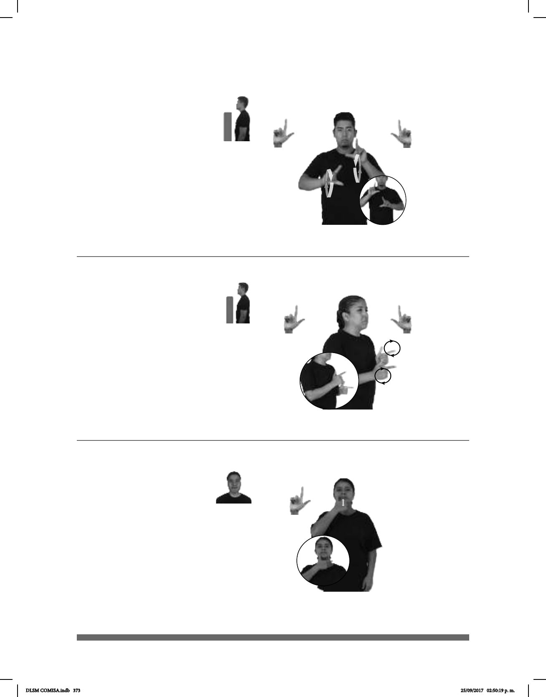

373
(L-98)
Seña: SB
MD y MB L.1
MD palma hacia la
izquierda, MB palma hacia la derecha.
MD y MB a la altura del
pecho.
La MD y la MB se
mueven formando círculos hacia el
frente alternadamente.
1. adj. Que tarda mucho
tiempo en moverse, en desarrollarse, en
llevar a cabo algo o en ir de un lugar a
otro. 2. adv. Poco a poco, lentamente.
Seña: SB
MD y MB L.1
MD y MB palmas hacia
afuera.
MD y MB a la altura del
pecho.
La MD y la MB se
mueven formando círculos hacia atrás
alternadamente.
sust. f. Es una lengua
gesto-espacial y percepción visual,
gracias a la cual los sordos pueden
establecer un canal de comunicación
con su entorno social.
(L-97)
LENGUA-DE-SEÑAS pro-YO APRENDER
Yo estoy aprendiendo lengua de señas.
__muy
TORTUGA
derecha
LENTO CAMINAR
La tortuga camina muy lento.
Seña: SM
L.1
Palma hacia adentro.
La mano incia sobre
la barbilla y termina a la altura del
cuello.
Recto repetidamente.
sust. y adj. f. Mujer
homosexual.
pro-TRES-DE-ELLOS AMIGO+MUJER LESBIANA MISMO pos-SU
Yo tengo tres amigas que son lesbianas.
(L-99)
DLSM COMISA.indb 373 25/09/2017 02:50:19 p. m.